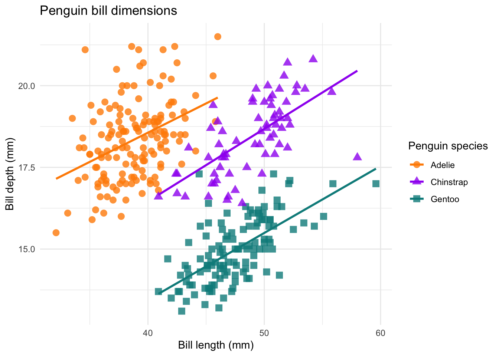

TP: Environmental Risk
Work Sheet 1
Task 1.2
Take the palmerpenguins data set (saved as dat_penguins) and make a similar plot:
1dat_penguins %>%
2 ggplot(aes(x = ______,
y = ______,
3 col = ______)) +
4 geom_point(aes(shape = ______),
5 size = 3,
6 alpha = 0.8) +
7 geom_smooth(method = "lm", se = FALSE) +
8 scale_color_manual(values = c("darkorange","purple","cyan4")) +
9 labs(title = ______,
x = ______,
y = ______) +
10 theme_minimal()- 1
-
Take the
dat_penguinsdata set, and then, - 2
-
Use
bill_length_mmas x andbill_depth_mmas y axis - 3
- Use different colors for the different species
- 4
- Add a point layer, use different point shapes for the different species
- 5
- Define point size
- 6
- and transparency
- 7
-
Add lines through the point clouds for each species (takes
col = speciesfrom the 2 - 8
- Define a manual color scale
- 9
- Define the title, x, y axes, and a name for the colour legend
- 10
- Add a theme
Use the filter() function from dplyr:
1dat_penguins %>%
2 ggplot(aes(x = bill_length_mm,
y = bill_depth_mm,
3 col = species)) +
4 geom_point(aes(shape = species),
5 size = 3,
6 alpha = 0.8) +
7 geom_smooth(method = "lm", se = FALSE) +
8 scale_color_manual(values = c("darkorange","purple","cyan4")) +
9 labs(title = "Penguin bill dimensions",
x = "Bill length (mm)",
y = "Bill depth (mm)",
color = "Penguin species",
shape = "Penguin species") +
10 theme_minimal()- 1
-
Take the
dat_penguinsdata set, and then, - 2
-
Use
bill_length_mmas x andbill_depth_mmas y axis - 3
- Use different colors for the different species
- 4
- Add a point layer, use different point shapes for the different species
- 5
- Define point size
- 6
- and transparency
- 7
-
Add lines through the point clouds for each species (takes
col = speciesfrom the 2 - 8
- Define a manual color scale
- 9
- Define the title, x, y axes, and a name for the color legend
- 10
- Add a theme
Task 1.3
Calculate the mean, standard deviation (sd()), and replicates (n()) of body_mass_gfor the different species and sexes in dat_penguins.
Task 1.4
Take the dat_penguins data and
- calculate the mean
body_mass_gperyearandspecies - change the format from long to wide, year should be distributed across columns
1dat_penguins %>%
2 group_by(______, ______) %>%
3 summarise(______ = mean(______)) %>%
4 pivot_wider(names_from = ______,
5 values_from = ______)- 1
-
Take the
dat_penguinsdata - 2
-
Group it by
speciesandyear - 3
-
Calculate the
mean()ofbody_mass_g - 4
-
Transform into a wide data frame, take the column names from
year - 5
-
and the values from the mean
body_mass_g
1dat_penguins %>%
2 group_by(species, year) %>%
3 summarise(mean_body_mass_g = mean(body_mass_g)) %>%
4 pivot_wider(names_from = year,
5 values_from = mean_body_mass_g)- 1
-
Take the
dat_penguinsdata - 2
-
Group it by
speciesandyear - 3
-
Calculate the
mean()ofbody_mass_g - 4
-
Transform into a wide data frame, take the column names from
year - 5
-
and the values from
mean_body_mass_g
Task 1.4 Bonus
Why are there NA values and how can you avoid it?
Have a look at the actual data:
dat_penguins %>%
view()The data contains NA values. Since these values are not known, R cannot calculate a mean for groups containing NA values. To ignore NA values, set na.rm = TRUE in the mean() function:
dat_penguins %>%
group_by(species, year) %>%
summarise(mean_body_mass_g = mean(body_mass_g, na.rm = TRUE)) %>%
pivot_wider(names_from = year,
values_from = mean_body_mass_g)